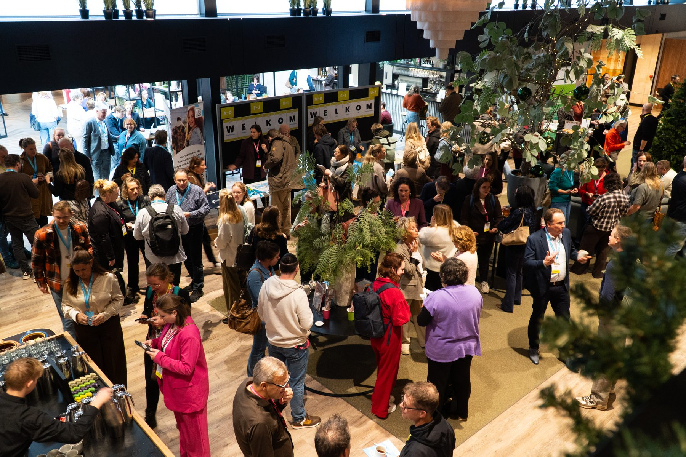
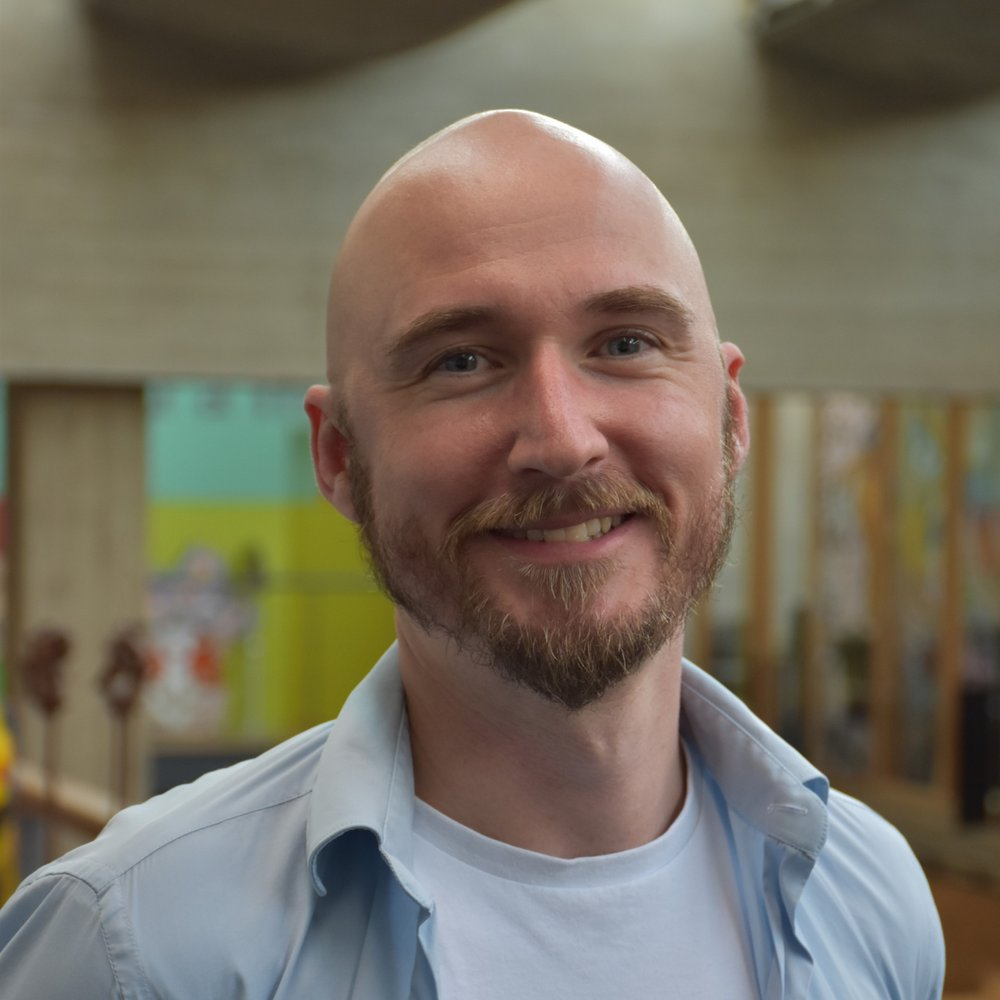

Een volle opkomst
De Landelijke Onderwijsdag trok een volle opkomst en de sessies werden goed bezocht.

Bedankt aan alle deelnemers, sprekers, standhouders en partners!
Wil je er volgend jaar ook bij zijn? Meld je aan voor de nieuwsbrief en ontvang als eerste de save the date.
Dank aan iedereen die erbij was. Zo blikken we terug op de dag.
De Landelijke Onderwijsdag trok een volle opkomst en de sessies werden goed bezocht.
Deelnemers waren veel met elkaar in gesprek: in de sessies, bij de stands en tussendoor.
De standhouders stonden vol enthousiasme klaar om de deelnemers te informeren over hun producten en diensten voor het onderwijs op het Netwerkplein.
De Werelt dacht met ons mee en hielp waar nodig. Alles was goed geregeld.
Landelijke Onderwijsdag wordt georganiseerd door Stichting Consortium Beroepsonderwijs. Wij werken dagelijks samen met scholen, opleiders en het werkveld: met leermiddelen, examens, digitale ondersteuning en inhoudelijke expertise helpen we onderwijs maken dat aansluit bij wat studenten straks nodig hebben.
Vanuit de praktijk
Ontwikkeld samen met scholen, opleiders en het werkveld.
Voor het onderwijs
Gemaakt voor studenten en docenten in het beroepsonderwijs.
Met samenwerking
Mogelijk dankzij de inzet van iedereen die het onderwijs beter maakt.
De wereld om ons heen verandert in hoog tempo. Het beroepsonderwijs verandert mee. Juist daarom is het belangrijk om elkaar te ontmoeten, ervaringen uit te wisselen en samen vooruit te kijken.
Tijdens de Landelijke Onderwijsdag 2026 kwamen onderwijsprofessionals van scholen uit het hele land en partners uit het werkveld samen. Praktijkverhalen van scholen, actuele thema's en ontmoetingen met collega's uit heel Nederland: er was keuze uit tientallen sessies over onderwerpen die spelen in het beroepsonderwijs. Van AI en examinering, zorgtechnologie en internationalisering tot studentenwelzijn.

Scholen lieten zien hoe zij de nieuwste ontwikkelingen vertalen naar de praktijk en gingen hierover graag met je in gesprek.
We bedanken alle sessieleiders voor hun inzet tijdens de Landelijke Onderwijsdag.

Projectleider Studenten bij het Trimbos-instituut

Practor AI, Practoraat Interactieve Technologie van Yonder

Programma Manager Duurzaamheid bij Talland College

Programmamanager Schooluitval en Jeugdwerkloosheid bij ROC Midden Nederland

Regisseur Leven Lang Ontwikkelen (LLO) en Volwassenenonderwijs bij Vista College

Docent Mechatronica bij Da Vinci College en contact Internationalisering

Docent onderzoeker Zorg en Technologie bij ROC van Twente

Docent-onderzoeker bij Graafschap College en lerarenopleider aan de HAN Academie Educatie

Regisseur immersieve technologie (XR/VR) bij Landstede

Practor mediawijsheid bij Mediacollege Amsterdam

Beleidsadviseur Studentenwelzijn bij Firda
Een inspirerende dag met een mooie afwisseling tussen keynotes en praktische sessies. Ik ben naar huis gegaan met nieuwe ideeën die ik de volgende dag al met mijn team heb gedeeld.
Het waardevolst vond ik de gesprekken met collega's van andere mbo-instellingen. Je merkt dat veel scholen met dezelfde uitdagingen bezig zijn en juist daardoor leer je ontzettend veel van elkaar.
De Landelijke Onderwijsdag biedt precies de combinatie die je zoekt: inspiratie, praktische handvatten én een sterk netwerk. Ik kijk nu al uit naar de volgende editie.
Dank voor je komst naar de Landelijke Onderwijsdag 2026. De evaluatie van de dag ontvang je per e-mail. Meld je aan voor de nieuwsbrief om als eerste te horen over een volgende editie.